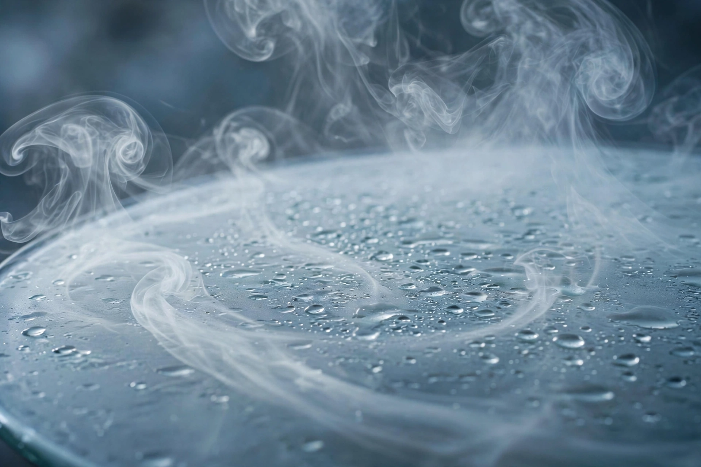

| Absolute humidity | |
|---|---|
| Common symbols | AH, ρw |
| SI unit | kg/m³ (commonly g/m³) |
| Definition | Mass of water vapour per unit volume of air |
Absolute humidity is the mass of water vapour present in a unit volume of air, usually expressed in grams per cubic metre (g/m³). Formally, if mw is the mass of water vapour in a volume V of moist air, then absolute humidity is
AH = mw / V
Typical values range from near 0 g/m³ in cold, dry polar air to about 30 g/m³ in saturated tropical air at 30 °C.
Absolute humidity changes as air temperature or pressure changes, because the volume of a parcel of air expands or contracts. This makes it less convenient than some other measures for certain purposes. By contrast, relative humidity expresses the water vapour content as a percentage of the maximum (saturation) value at the same temperature, while specific humidity is the ratio of the mass of water vapour to the total mass of the air parcel and remains nearly constant as the parcel expands or rises.
The maximum absolute humidity of saturated air rises steeply with temperature, roughly doubling for every 10 °C increase: approximately 5 g/m³ at 0 °C, 9.4 g/m³ at 10 °C, 17.3 g/m³ at 20 °C, and 30.4 g/m³ at 30 °C. When air containing a fixed amount of water vapour is cooled, its absolute humidity stays roughly constant until the dew point is reached, at which point vapour begins to condense.
Absolute humidity is used in meteorology, HVAC engineering, drying processes, and health research. Studies of respiratory-virus transmission, for example, have found that indoor absolute humidity correlates with influenza survival and spread, while dehumidification targets in building design are often specified in absolute terms.